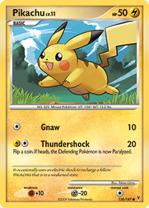
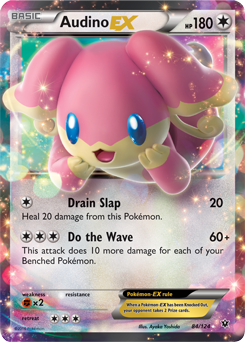

After determining which player goes first, both players place their Shuffled deck face down on the upper right side of their respective half of the player area or Field. The field is roughly split in half with each player utilizing the half closest to them. The players then each take seven cards from the top of their respective decks. These cards go into their Hand.
Players then place one Basic Pokémon from their hand face down in front of them toward the upper center of their half of the field as their Active Pokémon. If they have more than one Basic Pokémon, they may place the rest face down directly in from of them in their Bench. No more than five Pokémon may occupy a given player’s Bench at the same time. Evolved Pokémon count as only one Pokémon when in play on the field.
If a player does not have any Basic Pokémon in their hand during setup, they must reshuffle all the cards in their hand back into their deck, and then draw seven more cards. Repeat this process until each player can play a Basic Pokémon as their Active Pokémon. If a player has to reshuffle to get a Basic Pokémon into play, that player’s opponent gets to take an extra card from the top of their deck and put it into their hand (one card per each reshuffle).
Next, each player sets aside six cards from the top of their deck face down to the left side of their half of the field. These six cards are their Prize cards. Finally, each player reveals (or flips over) their Active and Bench Pokémon.